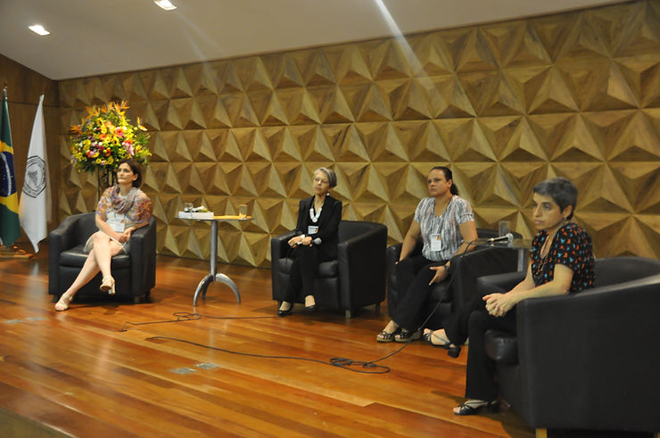

Reunião final do CONBIPE discute as articulações das principais entidades para o desenvolvimento da Psicologia do Esporte.
Com o intuito de discutir e informar as ações e contribuições realizadas por cada entidade na desenvolvimento, expansão e consolidação da Psicologia do Esporte, representantes de CRPs, ANPEPP, CFP, APAF, ABRAPESP, ABEPEEX, CBF (Arbitragem), Psicólogos COB, Sedes e ISSP participaram de uma reunião ao final do CONBIPE.
Luciana Angelo, ex-presidente da ABRAPESP, deu inicio ao debate falando sobre a reunião realizada no primeiro dia de evento, em que estiveram presentes os presidentes do CREF e CRP, que abordou as questões referente a melhor compreensão dos limites de cada profissão na atuação no esporte e nas possibilidades de melhoria da formação em Psicologia do Esporte de modo geral.
A psicóloga Regina Brandão enfatizou a história da Psicologia do Esporte no Brasil e cobrou maior atenção da ISSP (International Society of Sport Psychology) para a produção e avanços da área no país. O que foi acolhido pela ISSP, que se comprometeu a colaborar de alguma forma.
Maurício Marques, membro da ABRAPESP, destacou a importância da revista da ABRAPESP para a área, e obteve o apoio dos presentes.
Para os participantes, a reunião foi bastante significativa, destacaram a necessidade de uma articulação entre as entidades representantes da área e de planejar ações concretas que podem impactar, principalmente, na formação, o que é o maior desafio.